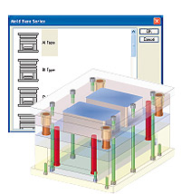

Solid Edge Mold Tooling
Use the Solid Edge Mold Tooling application to create plastic mold base components and to document the mold tool design process to your standards. The Mold Tooling application is available with a valid Mold Tooling license.

Using the Solid Edge Mold Tooling application
You can:
-
Create a mold tooling project as a new assembly document.
-
Add plastic parts to the mold tooling assembly.
-
Create slides, lifters, and inserts.
-
Create a parting line to sort the existing part faces onto the core and cavity sides. Then create a parting surface that, along with the corresponding part half, will completely shape the mold opening surfaces.
-
Select a sketch to model injection channels (also called runners) to connect the injection machine nozzle and one or more parts. At the end of the channels are gates, used to inject the plastic material in those parts.
-
Define the mold base plates.
-
Add dimensions, machined holes, ejector pins, cooling channels, patterns, and other options.
Getting started
You can install the Solid Edge Mold Tooling Design application by selecting Mold Tooling on the Solid Edge installation screen.
After installation:
-
A new command ribbon—Mold Tooling—is added to Solid Edge in the Assembly environment.
-
A new tab—Mold Tooling—is added to Assembly PathFinder.
-
Help, tutorials, and tutorial data files are available in a newly created folder structure. The default location is ..\Program Files\Siemens\Solid Edge Mold Tooling 2019.
Help for Solid Edge Mold Tooling Design
To open the HTML Help and tutorials for Mold Tooling, on the Solid Edge ribbon→Mold Tooling tab, click Mold Tooling Help .
Learn more
Standard PartsLook up more details
Solid Edge CAM Pro command2D Nesting command